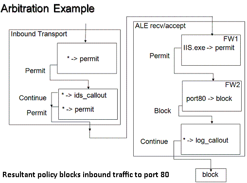

Filter arbitration is the logic built into the Windows Filtering Platform (WFP) that is used to determine how filters interact with each other when making network traffic filtering decisions.
The following behaviors characterize the filter arbitration system:
Each filter layer is divided into sub-layers ordered by priority (also called weight). Network traffic traverses sub-layers from the highest priority to the lowest priority. Sub-layers are created and managed by the developers using the WFP API.
Within each sub-layer, filters are ordered by weight. Network traffic is indicated to matching filters from highest weight to lowest weight.
The filter arbitration algorithm is applied to all sub-layers within a layer and the final filtering decision is made after all sub-layers have been evaluated. This provides for multiple matching capability.
Within a sub-layer, filter arbitration is performed as follows:
Within a layer, filter arbitration is performed as follows:
The diagram below illustrates a sample sub-layer configuration. The outer boxes represent layers. The inner boxes represent sub-layers that contain filters. The wildcard (*) in a filter means all traffic matches the filter.

The only way for a filter to be bypassed is if a higher weight filter has permitted or blocked the traffic within the same sub-layer. Conversely, one way of ensuring that a filter always sees all traffic within a layer is to add a sub-layer that contains a single filter that matches all traffic.
The rules described below govern the arbitration decisions within a layer. These rules are used by the filter engine to decide which one of the sub-layer actions is applied to the network traffic.
The basic policy is as follows.
The basic policy does not support the scenario of an exception not overridden by a firewall. Typical examples of this type of scenario are:
In order to support the above scenarios, a filtering decision must be made more difficult to override than another filtering decision by managing the action override permission. This permission is implemented as the FWPS_RIGHT_ACTION_WRITE flag and it is set on a per-filter basis.
The evaluation algorithm maintains the current action ("Permit" or "Block") along with the FWPS_RIGHT_ACTION_WRITE flag. The flag controls whether a lower priority sub-layer is allowed to override the action. By setting or resetting the FWPS_RIGHT_ACTION_WRITE flag in the FWPS_CLASSIFY_OUT0 structure, a provider governs how actions can or cannot be overridden. If the flag is set, it indicates that the action can be overridden. If the flag is absent, the action cannot be overridden.
| Action | Allow override (FWPS_RIGHT_ACTION_WRITE is set) | Description |
|---|---|---|
| Permit | Yes | The traffic can be blocked at another sub-layer. This is called a soft permit. |
| Permit | No | The traffic can be blocked at another sub-layer only by a callout Veto. This is called a hard permit. |
| Block | Yes | The traffic can be permitted at another sub-layer. This is called a soft block. |
| Block | No | The traffic cannot be permitted at another sub-layer. This is called a hard block. |
The filter action can be set by setting the type member in the structure FWPM_ACTION0 to either FWP_ACTION_BLOCK or FWP_ACTION_PERMIT. Along with the action type, a filter also exposes the flag FWPM_FILTER_FLAG_CLEAR_ACTION_RIGHT. If this flag is cleared, then the action type is hard and cannot be overridden except when a hard permit is overridden by a Veto as explained later on, else it is soft which can be overridden by high priority action.
The following table lists the default behavior for filter and callout actions.
| Action | Default Behavior |
|---|---|
| Filter permit | Soft permit |
| Callout permit | Soft permit |
| Filter block | Hard block |
| Callout block | Soft block |
A Veto is a "Block" action returned by the filter when the FWPS_RIGHT_ACTION_WRITE flag was reset prior to calling the filter. A Veto will block traffic that was permitted with a hard permit.
When a Veto is issued, it is an indication of conflict in the configuration. The following actions are taken to mitigate the conflict.
The traffic is blocked.
An audit event is generated.
A notification is generated.
[!Note]
The notification is received by all entities that have subscribed to it. This will typically include the firewall (in order to detect mis-configurations), or applications (in order to detect if their particular filter is overridden).
[!Note]
There is no mandatory user interface (UI) instantiated when a "Hard Permit" filter is overridden. The notifications of the override are sent to any provider that registered to receive them, which allows firewalls, or the applications that created the "Permit" filters, to show UI asking for user action. There is no value in having a platform UI notification for these override events since firewall ISVs that do not want to silently block can do so by registering at a different place in WFP, or (less preferred) handle all their logic in a call-out driver. ISVs that do think prompting users is a good idea will want to own the user experience and create their own UI.
The mitigation behavior described above ensures that a "Hard Permit" filter is not silently overridden by a "Block" filter, and covers the scenario where a remote administration port is not allowed to be blocked by the firewall. In order to silently override "Hard Permit" filters a firewall has to add its filters within a higher priority sub-layer.
[!Note]
Since there is no cross-layer arbitration, traffic permitted with "Hard Permit" may still be blocked at another layer. It is the responsibility of the policy author to ensure that traffic is permitted at each layer if necessary.
User applications requesting ports to be opened add overridable filters to a low priority sub-layer. The firewall can subscribe to the filter add notification events and add a matching filter after user (or policy) validation.